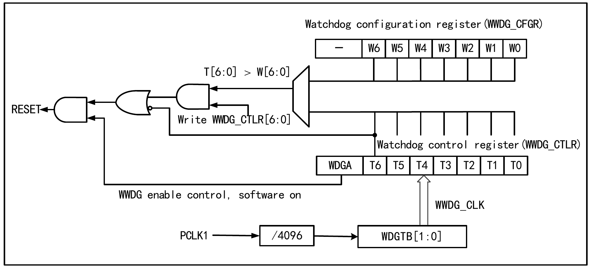
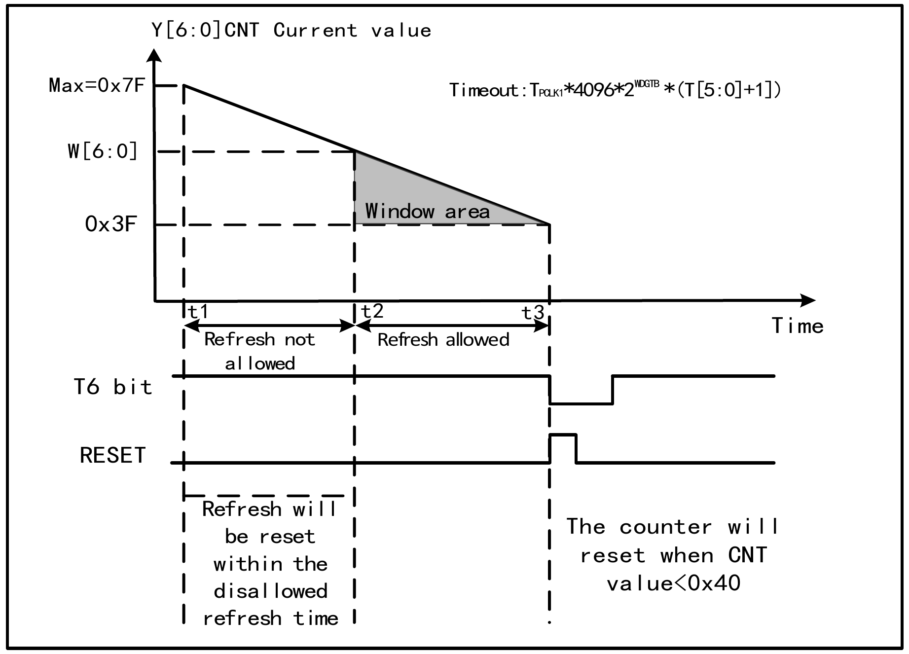

The Window Watchdog is generally used to monitor software faults during system operation, such as external interference, unpredictable logic errors, and other conditions. It requires refreshing the counter (kicking the dog) within a specific window time (with upper and lower limits); otherwise, a watchdog circuit reset of the system will be generated if the refresh occurs earlier or later than this window time.
8.1 Main Features
Programmable 7-bit down-counter
Dual-condition reset: the current counter value is less than 0x40, or the counter value is reloaded outside the window time
Early wakeup notification function (EWI), used to perform a timely kick action to prevent system reset
8.2 Functional Description
8.2.1 Principle and Usage
The Window Watchdog operates based on a 7-bit down-counter, which is attached to the PB1 bus. The counting time base WWDG_CLK is derived from the (PCLK1/4096) clock divider, and the divider coefficient is set in the WDGTB[1:0] field of the configuration register WWDG_CFGR. The down-counter is in a free-running state; whether the watchdog function is enabled or not, the counter continuously decrements in a loop. As shown in Figure 8-1, the internal structure block diagram of the Window Watchdog.

Figure 8-1: Window Watchdog block diagram
Starting the Window Watchdog
After system reset, the watchdog is in the disabled state. Setting the WDGA bit of the WWDG_CTLR register can enable the watchdog; afterwards it cannot be disabled unless a reset occurs.
Note: The WWDG clock source can be disabled by setting the RCC_PB1PCENR register, pausing the WWDG_CLK counting and indirectly stopping the watchdog function; alternatively, the WWDG module can be reset by setting the RCC_PB1PRSTR register, which has the same effect as a reset.
Watchdog Configuration
The watchdog internally contains a 7-bit counter that continuously decrements in a loop, supporting read/write access. To use the watchdog reset function, the following operations must be performed:
Counting time base: Via the WDGTB[1:0] field of the WWDG_CFGR register. Note that the WWDG module clock of the RCC unit must be enabled.
Window counter: Set the W[6:0] field of the WWDG_CFGR register. This counter is used by hardware for comparison with the current counter. The value is configured by user software and does not change. It serves as the upper limit value of the window time.
Watchdog enable: Software sets the WDGA bit of the WWDG_CTLR register to 1 to enable the watchdog function, which can then generate a system reset.
Kick (feed) the watchdog: That is, refresh the current counter value by configuring the T[6:0] field of the WWDG_CTLR register. This action must be executed within the periodic window time after the watchdog function is enabled, otherwise a watchdog reset will occur.
Kick window time
As shown in Figure 8-2, the gray area is the monitoring window area of the Window Watchdog. Its upper limit time t2 corresponds to the time point when the current counter value reaches the window value W[6:0]; its lower limit time t3 corresponds to the time point when the current counter value reaches 0x3F. Within this area, where t2<t<t3, a kick operation (writing T[6:0]) can be performed to refresh the current counter value.

Figure 8-2: Counting mode of the Window Watchdog
Watchdog reset:
When a kick operation is not performed in time, causing the value of the T[6:0] counter to change from 0x40 to 0x3F, a "window watchdog reset" will occur, generating a system reset. That is, when T6-bit is detected by hardware as 0, a system reset will occur.
Note: The application can write T6-bit to 0 via software to generate a system reset, equivalent to a software reset function.
When a counter refresh action is performed during the time when kicking is not allowed, i.e., writing to the T[6:0] field during the time t1≤t≤t2, a "window watchdog reset" will occur, generating a system reset.
Early wakeup
To prevent system reset caused by not refreshing the counter in time, the watchdog module provides an Early Wakeup Interrupt (EWI) notification. When the counter decrements to 0x40, an early wakeup signal is generated and the WEIF flag is set to 1. If the EWI bit is set, a window watchdog interrupt is triggered at the same time. At this point, there is 1 counter clock cycle remaining before hardware reset (decrementing to 0x3F), during which the application can immediately perform a kick operation.
8.2.2 Debug Mode
When the system enters debug mode, the WWDG counter can be configured to continue running or stop via the debug module registers.
8.3 Register Description
Table 8-1: WWDG related register list
Name
Address
Description
Reset Value
R16_WWDG_CTLR
0x40002C00
Control register
0x007F
R16_WWDG_CFGR
0x40002C04
Configuration register
0x007F
R16_WWDG_STATR
0x40002C08
Status register
0x0000
8.3.1 WWDG Control Register (WWDG_CTLR)
Offset address: 0x00
15
14
13
12
11
10
9
8
7
6
5
4
3
2
1
0
Reserved
WDGA
T[6:0]
Bits
Name
Access
Description
Reset
[15:8]
Reserved
RO
Reserved.
0
7
WDGA
RW1
Window watchdog reset enable bit.
1: Enable watchdog function (can generate reset signal);
0: Disable watchdog function.
Software writes 1 to enable, but it can only be cleared by hardware after reset.
0
[6:0]
T[6:0]
RW
7-bit down-counter, which decrements by 1 every 4096*2WDGTB PCLK1 cycles. When the counter decrements from 0x40 to 0x3F, i.e., when T6 toggles to 0, a watchdog reset is generated.
0x7F
8.3.2 WWDG Configuration Register (WWDG_CFGR)
Offset address: 0x04
15
14
13
12
11
10
9
8
7
6
5
4
3
2
1
0
Reserved
EWI
WDGTB[1:0]
W[6:0]
Bits
Name
Access
Description
Reset
[15:10]
Reserved
RO
Reserved.
0
9
EWI
RW1
Early wakeup interrupt enable bit.
If this bit is set to 1, an interrupt is generated when the counter value reaches 0x40. This bit can only be cleared by hardware after reset.
0
[8:7]
WDGTB[1:0]
RW
Window watchdog clock divider selection:
00: divide by 1, counting time base = PCLK1/4096;
01: divide by 2, counting time base = PCLK1/4096/2;
10: divide by 4, counting time base = PCLK1/4096/4;
11: divide by 8, counting time base = PCLK1/4096/8.
0
[6:0]
W[6:0]
RW
7-bit window value of the window watchdog. Used for comparison with the counter value. The kick operation can only be performed when the counter value is less than the window value and greater than 0x3F.
0x7F
8.3.3 WWDG Status Register (WWDG_STATR)
Offset address: 0x08
15
14
13
12
11
10
9
8
7
6
5
4
3
2
1
0
Reserved
EWIF
Bits
Name
Access
Description
Reset
[15:1]
Reserved
WO
Reserved.
0
0
EWIF
RW0
Early wakeup interrupt flag bit.
When the counter reaches 0x40, this bit is set by hardware and must be cleared by software; setting it by the user has no effect. Even if EWI is not set, this bit will still be set normally when the event occurs.